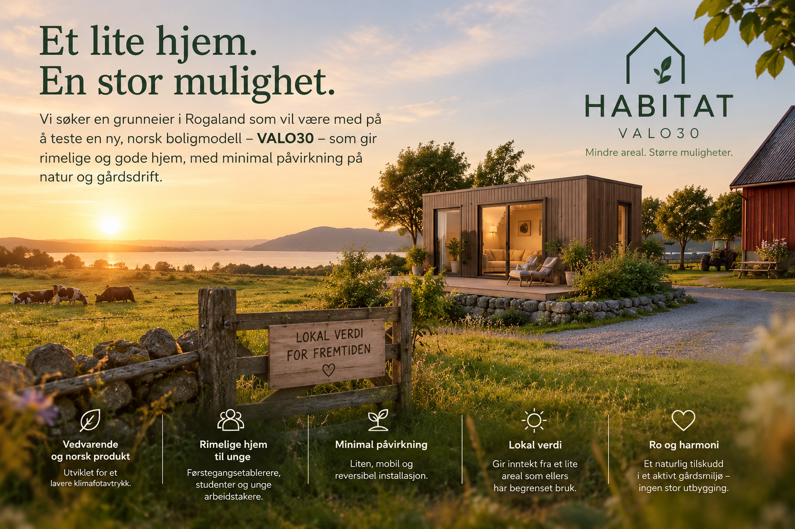

VALO30 er planlagt som en stasjonær helårsbolig, forankret til sin Foundation på én tomt. Moduler og fellesfunksjoner kan endres over tid. Flytting av boliger eller kapasitet mellom steder er et eget driftsspor som krever nye tekniske, juridiske og finansielle avklaringer.
Se innhold og beregn kostnaden for ditt sted →
En kort illustrasjon av hvordan Habitat kan passe inn i et fjordlandskap. Bygg, plassering og omgivelser er visualisert som konsept, ikke et ferdig utbyggingsprosjekt.
VALO30 har en målpris på 1 000 000 kr inkl. mva, ferdig levert og innflyttingsklar som basisbolig. Kjøkken med nødvendige hvitevarer, bad, varme, ventilasjon, varmtvann, elektrisk anlegg, nødvendig belysning og integrert oppbevaring inngår i målspesifikasjonen. Én standard og få varianter. Pris og innhold er ennå ikke bindende tilbud.
Få SKU-er og nødvendig grunnutstyr gir grunnlag for enklere produksjon. Målprisen er ikke dokumentert produksjonspris eller et salgstilbud.
Partneren leverer og har produkt- og serviceansvar for sitt tilbud. Habitat setter grensesnitt og standarder, samler kundereisen og kan ta avtalt kommisjon. Ingen leverandøravtaler eller provisjonssatser er bekreftet.
Boligmargin på VALO30, inntekter fra Foundation/infrastruktur/feste der Habitat faktisk leverer dette, og provisjon fra partnerprodukter og løpende tjenester. Dette er planlagt forretningsmodell, ikke opptjent inntekt.
Foundation er laget for permanent innfesting på valgt tomt, med dokumenterbar bæring. Senere demontering og gjenbruk må skje gjennom ny teknisk og juridisk avklaring. Startlån for mikrohus krever blant annet fast bygging i grunnen og eiet tomt eller festerett; kommunen vurderer hver søknad. Se Husbankens veileder.
Habitat skal vise en samlet innflyttingskostnad fra faktiske stedstall, ikke kamuflere Foundation og tilkoblinger i en boligpris. Kundens neste steg er et konkret tomtecase og dokumenterte tilbud.
VALO 30 er den første boligen i Habitat-serien: et komplett hjem på opptil omtrent 30 m² som kan endres gjennom levetiden. Arkitekturen skiller det som bør vare, fra det som må tilpasses klima, sted og bruk.
Ramme, konstruksjon, løftepunkter, teknisk kjerne, åpninger og faste tilkoblingspunkter.
Ytterkledning og isolasjon tilpasset nordisk, middelhavsklima, tropisk klima, ørken eller avsidesliggende steder.
Utskiftbar varme, kjøling, ventilasjon, filtrering og fuktstyring.
Kjøkken, bad, strøm, vann, data og innredning som kan tilpasses.
Avtakbar infrastruktur for solceller, gangveier, tekniske anlegg og framtidige funksjoner.
VALO30 kan fabrikkproduseres og transporteres til tomten. VALO30 Foundation er et eget, fast produktsystem dimensjonert for VALO30, med fundamentering, forankring, lastoverføring, drenering, frost og grensesnitt mot bakken. Grunnforhold og utførelse prosjekteres fortsatt for den konkrete tomten.
Fabrikkbygd bolig med dokumentert bæring, brann, fukt, inneklima, energi og tekniske installasjoner for helårsbruk. Fast grensesnitt mot VALO30 Foundation.
Fast, VALO30-spesifikk løsning for bæring, mekanisk innfesting, lastoverføring, drenering, frost og grensesnitt mot bakken. Dokumenter også vind og løft, fukt, korrosjon og inspeksjon. Ikke en universell foundation for andre moduler.
Modulære løsninger for vann, avløp, strøm, energi, batteri, fiber, overvann og avfall. Ekspansjonstank beholdes her og dimensjoneres mot den valgte installasjonen. Parkering, fellesfunksjoner og senere utvidelser skaleres etter tomt, kapasitet og behov.
Eiet tomt eller dokumentert festerett, med varighet, bruksrett, overdragelse og sikkerhet som må vurderes i den konkrete saken. Feste er en rett til grunn, ikke et fundament.
Avklar regulering og eventuelle dispensasjoner, søk byggetillatelse, dokumenter relevante TEK17-krav og avslutt byggesaken med ferdigattest eller midlertidig brukstillatelse. Kommunen vurderer det konkrete prosjektet.
VALO30 Foundation er en egen VALO30-spesifikk SKU. Oppgraving og tomteklargjøring er en separat site-prep leveranse: grunnundersøkelse, graving der det trengs, masser, drenering og dokumentasjon av ferdig grunn. Foundation-leveransen omfatter tegninger for grensesnittet mot VALO30, lastberegning, forankringsplan, monterings- og kontrollplan samt dokumentasjon av utført arbeid. Valg av fundamenttype, dimensjoner og utførelse må prosjekteres for tomten. Kjernen VALO30 + VALO30 Foundation er ment som permanent bolig etter montering og kommunal godkjenning. Øvrig infrastruktur og felleskapasitet kan legges til modulært. Dette gir ikke automatisk byggetillatelse eller rett til startlån.
DiBK beskriver mikrohusreglene for frittliggende helårsbolig inntil 30 m² BRA, én boenhet, én etasje, uten kjeller og høyst 4,5 m over bakken. Se reglene hos DiBK →
Husbanken åpner for vurdering av stasjonære mikrohus som er fast bygget i grunnen. Startlån er ingen generell produktgodkjenning; kommunen vurderer også søkeren, boligens egnethet, verdi og sikkerhet. Ved nybygg kan startlånet ikke utbetales før ferdigattest eller midlertidig brukstillatelse foreligger. Se Husbankens mikrohusveileder → Se reglene for utbetaling ved nybygg →
Hver modul kobles til standardiserte grensesnitt for konstruksjon, strøm, vann, varme, data og styring.
Kompakt plass til klær og oppbevaring.
Låsbart lager, vaskerom eller verksted.
Eget arbeidsrom uten å endre boligen.
Ekstra soveplass og oppholdsrom ved behov.
Solceller, batteri og lokal energiforsyning.
Lokal datakraft med mulig gjenbruk av varme. Boligen fungerer også uten denne modulen.
Kompakt badstue og dusj i en egen våtromsmodul.
Badstue, dampbad, dusj, vannbehandling og restitusjon.
Kulp, motstrømsbasseng eller lite basseng med egen vannrensing og klimastyring.
Et rolig rom for hvile, massasje, meditasjon, lys og lyd.
Rom for trening, bevegelse og fysisk aktivitet.
Privat eller felles velværeavdeling. Oksygenbehandling og medisinske tjenester krever egne godkjenninger.
Et Habitat-område kan dele biler, utstyr og ting som sjelden brukes, i stedet for at alle eier hver sin. Delte ressurser kan bookes, vedlikeholdes og flyttes mellom steder når behovene endrer seg.
Felles elbiler, sykler, lastesykler, varebiler, tilhengere, lading, gjestetransport og eventuelt skyss til kollektivtransport.
Verktøy, verkstedutstyr, hageredskaper, turutstyr, sportsutstyr og annet som er lite effektivt å eie hver for seg.
Pakkebokser, felles lager, kjølelager, leveranser, avfall og gjenvinning.
Tilgjengelige moduler, plass til familie eller omsorgspersoner og fleksible rom for samtaler og pleie.
Drivhus, felles dyrking, hage, utekjøkken og lokal matproduksjon.
Felles vaskeri, sengetøy, renhold, utstyr og lager for steder med flere boenheter.
Habitat setter sammen tjenester, rom og utstyr. Ett driftsteam kan betjene flere boliger og steder. Tjenestene blir tilgjengelige ved behov og deles på flere.
Mottak, gjester, booking, leveranser, lokal koordinering og hjelp til beboere.
Bestill renhold, sengetøy og klargjøring av boliger og overnattingssteder.
Felles vaskemaskiner eller betjent vask, tørk og tekstilpleie.
Måltider, dagligvarer, felles matlager, catering og tjenester knyttet til kafé.
Planlagt vedlikehold, reparasjoner, reservedeler, uteområder og teknisk service.
Adgangsstyring, gjestetilgang, belysning, hendelseshåndtering og eventuelt bemanning.
Lek, leksehjelp og barnepass der det er egnet og tillatt.
Hundevask, lufteområder, pass og andre felles tjenester for kjæledyr.
Rom som kan bookes til frisør, hudpleie, massasje, skredder, reparasjoner og besøkende tjenesteytere.
Fleksibelt rom for konsultasjon, fysioterapi, digitale helsetjenester og førstehjelp. Medisinske tjenester må oppfylle egne krav.
Studieplass, undervisning, bibliotek og verksted for fellesskapet.
Stedsledelse, servicepersonell, verksted, renhold og eventuelt personalbolig som egne moduler.
Økonomien handler om mer enn prisen på en bolig. Et lite privat hjem kan gi tilgang til et større nettverk av felles rom, eiendeler og tjenester.
Det som bør være personlig, trygt og alltid tilgjengelig.
Velvære, samvær, kultur, arbeid, mat og andre rom som deles.
Mobilitet, verktøy og utstyr som kan brukes ved behov i stedet for å kjøpes av hver enkelt.
Renhold, vertskap, vedlikehold, mat, omsorg og drift på tvers av steder.
Habitat er laget med en konstruksjon som skal vare lenge, og tekniske systemer som kan skiftes oftere. Energi, vann, avløp, klima, styring, kjøkken og deler av innredningen bør kunne byttes som moduler.
En teknisk modul som svikter, skal kunne tas ut og erstattes med kortest mulig avbrudd.
Ny teknologi for batteri, solceller, vann, klima og styring kan tas i bruk uten å bytte boligen.
Driftsselskap med flere boliger kan ha standard reservedeler tilgjengelig for alle stedene.
Vedlikehold, fjernovervåking, erstatningsmoduler og planlagte oppgraderinger tilbys som en løpende tjeneste.
VALO30 er den norske produktkonfigurasjonen av Habitat. Grensen rundt 30 m², én etasje og norsk høyde er en norsk regulatorisk og økonomisk optimalisering — ikke en global begrensning. I andre land kan areal, høyde, etasjer, geometri, konstruksjon og materialer optimaliseres på nytt mot lokale regler, klima, marked, produksjon og logistikk.
Habitat-grammatikken beskriver grensesnitt og dokumentasjon; land, klima, materialer, produksjon og logistikk avgjør den fysiske utførelsen. VALO30 er en norsk konfigurasjon, ikke en global arealstandard. Vi vurderer materialer, fabrikk og ferdiggrad per delsystem før vi låser produktet.
Les om Habitat-grammatikk og produksjonsmodell →Samme byggesystem kan brukes til én bolig eller til steder der boliger, fellesrom og tekniske moduler endres etter behov.

Trinnvis utbygging, felles drift og enheter som kan flyttes.
Bønder kan få løpende inntekter fra egnet grunn og landskap uten at hver gård må bygge opp hele driften alene.
Små boliger for overnatting, med mulighet for selvforsyning og delte tjenester.
Små private boliger kombinert med fellesrom og tjenester.
Kapasitet som raskt kan settes opp og endres for prosjekter, arbeid og overgangsperioder.
Felles driftsmodell med fasade og innredning tilpasset stedet.
Boliger, arbeid, velvære, samvær, kultur, handel, energi og datakraft med samme tilkoblingssystem.
Kompakte boliger, delte funksjoner og alternative tomte- og eiermodeller kan senke terskelen inn i et første hjem.
Parkering, næringsareal, restareal og andre underutnyttede steder kan vurderes for ny boligbruk der plan og infrastruktur gjør det mulig.
Asfalt og harde flater kan transformeres til boliger, grønne lunger, oppholdssoner og bedre arealbruk.
Habitat kan brukes som et standardisert bolig- og områdesystem på tomter som i dag er svakt utnyttet. Målet er å gjøre det enklere å teste, fase inn og drifte boliger og fellesfunksjoner uten at hele området må bygges ferdig på dag én.
Overflateparkering, restareal, eldre næringstomter og store tomter kan vurderes for ny bruk.
Start med et avgrenset byggetrinn og utvid når regulering, marked og drift er dokumentert.
Kjøp er ikke eneste vei. Langsiktig leie, feste, opsjon, kjøp eller utviklingssamarbeid kan vurderes ut fra stedet.
Fundament, tekniske tilkoblinger, mobilitet og fellesfunksjoner kan planlegges som delt kapasitet for flere boliger.
Habitat kan brukes som et pilotverktøy for boligtilgang og arealtransformasjon: førstegangshjem, lav grønn fortetting og ny bruk av arealer som i dag er dominert av asfalt, parkering eller svak utnyttelse.
Test boligmodeller med lavere inngangsbillett og tydelig vei fra tomt til godkjent bolig.
Identifiser steder der eksisterende planformål og faktisk bruk ikke lenger gir god arealutnyttelse, og vurder ny boligbruk gjennom ordinær planprosess.
Konverter harde flater til boliger kombinert med grøntareal, møteplasser, overvannshåndtering og mindre areal bundet til bilparkering.
Avgrens ett område der kommune, grunneier og Habitat kan teste teknikk, søknadsprosess, drift og økonomi før eventuell skalering.
I et flyttbart driftsspor kan standardiserte fundamenter, løftepunkter, tilkoblinger og tekniske pakker gjøre flytting til en planlagt del av driften. Nettverket kan øke eller redusere kapasitet og flytte enheter mellom steder med nødvendige tillatelser. En Habitat-enhet som er etablert som stasjonær helårsbolig på VALO30 Foundation, må ikke forutsettes flyttbar i samme finansieringsmodell: demontering og ny plassering krever egen vurdering av tillatelser, rettigheter og lånevilkår.
Legg til boliger på en gård, et prosjektsted, et reisemål eller et boligområde når behovet øker.
Flytt boliger som ikke lenger trengs, i stedet for å sitte med tomme bygg og faste kostnader.
Flytt standardiserte Habitat-enheter mellom godkjente steder når etterspørsel, sesong, tillatelser eller økonomi endrer seg.
En operatør med flere steder kan flytte boliger dit de trengs, i stedet for å overdimensjonere hvert sted.
Dette er to ulike hypoteser og skal ikke blandes. Begge må undersøke to dimensjoner: den interne opplevelsen av hjemmet og den eksterne anerkjennelsen av boformen.
Opplever beboeren dette som et fullverdig hjem? Undersøk kontroll, autonomi, privatliv, trygghet, identitet, tilhørighet og muligheten til å forme stedet selv.
Blir boformen behandlet som et fullverdig hjem av omgivelsene? Undersøk sosial status og stigma, permanenthet og legitimitet, og hvordan familie, naboer, banker, kommune og andre institusjoner møter beboeren og boligen.
Kan en privat bolig på omtrent 30 m², kombinert med Habitat-modellen rundt den, gi både en fullverdig intern opplevelse av hjem og ekstern anerkjennelse som fullverdig hjem? Juridisk eierskap holdes konstant etter ordinær norsk modell slik at bolig, areal og Habitat-system kan undersøkes uten å blande inn eierskapsformen.
Når Habitat-modellen først er validert, undersøkes juridisk eierskap separat. Gir alternative eierformer samme interne opplevelse og samme eksterne anerkjennelse, eller endres én eller begge? Dette krever en egen studie der eierskap faktisk varieres.
Begge dimensjoner må måles. Et positivt resultat internt kan ikke brukes som bevis for ekstern aksept, og ekstern legitimitet kan ikke brukes som bevis for at beboeren faktisk opplever boligen som sitt hjem.
Habitat kan organiseres forskjellig fra sted til sted. VALO30 kan eies av beboeren på eiet eller festet grunn, eller inngå i et felles eid boligprosjekt. Borettslag, eierseksjonssameie, samvirke og felles driftsselskap er muligheter som må vurderes opp mot tomt, finansiering, bruk og hvem som skal eie og drive fellesanleggene. Ingen av modellene er standard eller avklart for Habitat.
Beboeren eier VALO30 med dokumentert rett til grunnen. Fellesgoder kan avtales separat, slik at boligen ikke er avhengig av at alle velger de samme tjenestene.
Kan vurderes for et samlet boligfelt der eierskap til boliger, grunn, adkomst og fellesarealer skal organiseres på ett sted. Valg av form krever vurdering av den konkrete eiendommen.
En mulig modell for felles utstyr, moduler og tjenester. Bønder og andre grunneiere kan også vurdere felles porteføljefinansiering, men eierskap, sikkerhet og inntektsdeling må avtales særskilt.
Vei, strøm, vann, avløp og nødvendig vedlikehold har faste kostnader. Vis dem separat fra valgfrie fellesgoder og beregn kostnad per bolig også ved lavt antall enheter.
Bilpool, badstue, kjøkken, Studio 10/20 og gjesterom krever kapasitet ved høy etterspørsel, samtidig som tomgang koster. Innfør dem når bruk og finansiering kan begrunnes.
Avklar booking, renhold, reparasjon, forsikring og hvem som betaler ved skade før et fellesgode åpner. Brukerbetaling kan dekke bruk, men også faste kostnader må finansieres.
Felles drift kan organiseres per sted eller på tvers av flere steder. Inntekter fra eksterne brukere eller utleie er en mulighet, ikke en forutsetning i grunnbudsjettet før etterspørsel og tillatelser er avklart.
Vi ønsker å lære av norske aktører som gjør mer enn å selge et bygg. Omgi viser hvordan prosjektering, byggesøknad, fundament, infrastruktur, produksjon, transport og montering kan koordineres i én kundereise. Omgi leverer hotellrom til reiseliv; VALO30 er planlagt som standard bolig. Habitat må dokumentere egne leverandører, priser og ansvar før samme leveranseløfte kan gis.
Vurder grunn, rettigheter, regulering, tilkobling, adkomst og kostnad. Kunden får vite hva som mangler og hva som krever kommunal behandling.
Foundation, grensesnitt, søknad og finansiering må avklares før produksjon og dato kan bekreftes.
Produser VALO30, klargjør stedet, etablér Foundation og tekniske tilkoblinger.
Transport, løft, mekanisk innfesting, tilkobling, kontroll og nødvendig brukstillatelse før innflytting.
Habitat kan etableres på eiet eller festet grunn. Derfor må VALO30 med sin Foundation, site-prep, retten til grunnen, infrastrukturen, den løpende driften og finansieringen beskrives og prises hver for seg. Dette er en foreslått modell, ikke et ferdig kjøpstilbud eller et lånetilsagn.
Pris og spesifikasjon for selve boligen: konstruksjon, VALO30 Foundation, leveranse, montering, grunnutstyr, garanti og ansvar for utskiftning eller flytting.
En standardisert avtale om langvarig bruk av grunnen bør avklare rettigheter, løpetid, festeavgift og regulering, overdragelse, långivers sikkerhet og hva som skjer ved opphør.
Egen pris og avtale for vei og adkomst, strøm, vann, avløp, fiber, renovasjon, parkering og fellesanlegg. Eierskap, driftsansvar, kapasitet og kostnadsdeling må fremgå.
Synlige kostnader for vedlikehold, forsikring, service, fellesarealer og eventuelle delte tjenester. Avtalen bør vise hvem som leverer og betaler for hva.
Bolig, feste og infrastruktur kan vurderes separat av långiver. Lånemuligheter og sikkerhet avhenger av konkrete avtaler, eierskap, prosjektgodkjenninger og bankens vurdering.
Målet er at kjøper skal se total etableringskostnad og løpende kostnad før beslutning, samtidig som grunneier og finansieringspart får klare rettigheter og plikter. Ingen finansieringsordning er avklart for Habitat ennå.
Se hva som må avklares før tilbud →Fyll inn det du vet om tomten og boligen. Lag en gratis søknadskladd med oversikt over opplysninger og vedlegg som mangler. Du kan ta den videre selv eller be oss hjelpe deg gjennom resten av prosessen.
Lag gratis søknadskladd →VALO30 er en boligkjerne som kan stå alene. Habitat-nettverket med flere boliger og fellesgoder er et eget prosjektspor for grunneiere, operatører og kommuner. Begge trenger en konkret tomt, ansvar for leveransen og et etterprøvbart kostnadsgrunnlag før salg.
Undersøk rett til grunn, regulering, adkomst, grunnforhold, tilkoblinger og kommunal behandling for én faktisk pilot. Ingen godkjent Habitat-tomt er annonsert.
Skill fabrikkpris for VALO30 fra Foundation, site-prep, transport og montering, tilkoblinger, offentlige kostnader og løpende drift. Oppgi kilde og status for hvert beløp.
Avklar hvem som prosjekterer, produserer, transporterer, monterer, kobler til, dokumenterer og følger opp feil før et nøkkelferdig tilbud kan gis.
Produksjonspartner, leveringstid og pris må bekreftes gjennom avtale. Byggevarer trenger relevante dokumenterte egenskaper; den ferdige boligen og tomten må dokumenteres mot gjeldende krav og byggesak.
Prisverktøyet over viser et illustrativt totalbeløp når du fyller inn stedskostnader fra egne estimater eller tilbud. Et bindende tilbud krever dokumenterte priser, konkret tomt og avklart leveranse. Verken leverandør, totalpris eller finansieringsordning er bekreftet.
Ta kontakt om et konkret Habitat-prosjekt →Habitat kombinerer en varig konstruksjon med utskiftbare løsninger for bolig, arbeid, velvære, samvær, kultur, handel, mobilitet, delte eiendeler, logistikk, omsorg, mat, tjenester, energi og datakraft. Én enhet kan være et hjem. Mange enheter kan danne et nettverk der funksjoner og kapasitet justeres. Flytting mellom steder må behandles som et eget driftsspor med nødvendige tillatelser og nye finansieringsavklaringer.
Ta kontakt om produksjon, utplassering eller pilot →